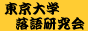

ナナペーハーとは
東京大学落語研究会の有志によって結成されたコント集団。
年二回、オムニバス形式のコントライブを行っています。
・過去公演
第30回公演 61vs62
第29回公演 実験大大大失敗
・リンク
 コント集団ナナペーハー 公式ホームページ
ナナペーハーtwitterアカウント(@7ph_nanape)
コント集団ナナペーハー 公式ホームページ
ナナペーハーtwitterアカウント(@7ph_nanape)
東京大学落語研究会
東大落研twitterアカウント(@todaiochiken)
コント集団ナナペーハー 公式ホームページ
ナナペーハーtwitterアカウント(@7ph_nanape)